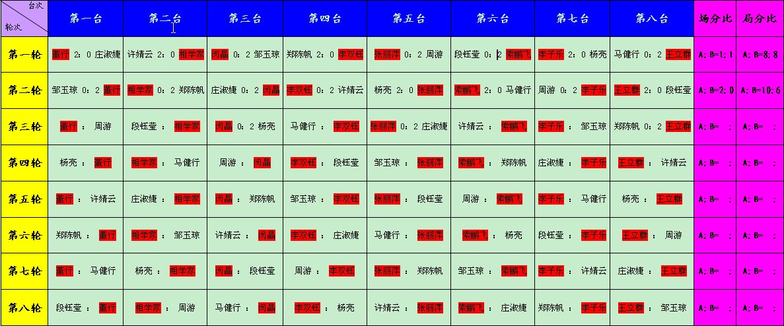
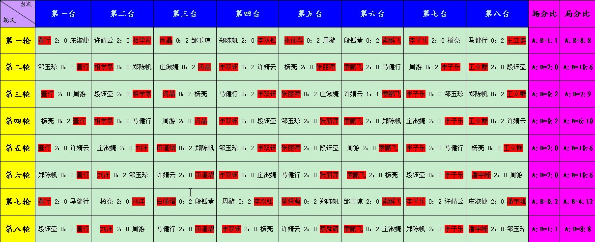
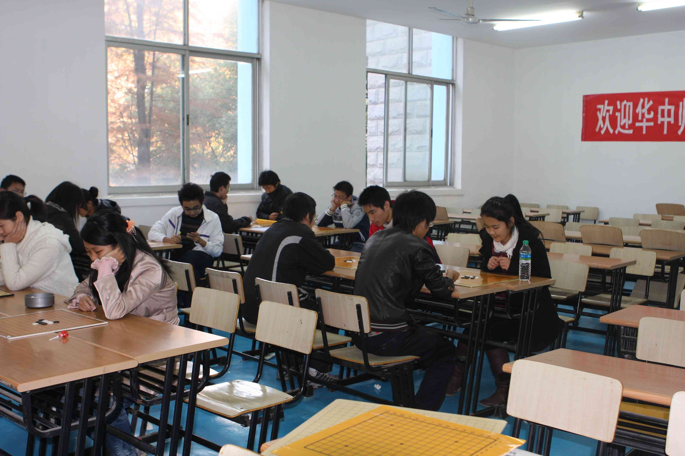
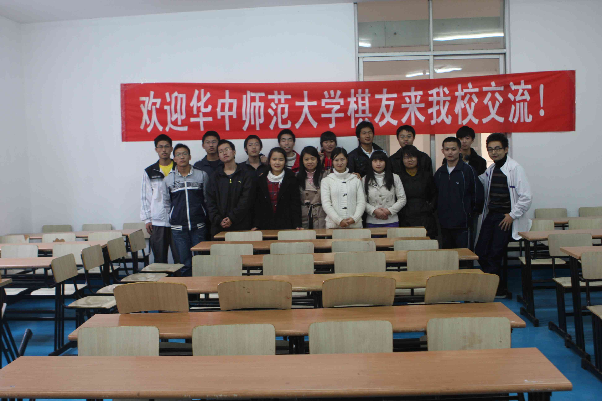
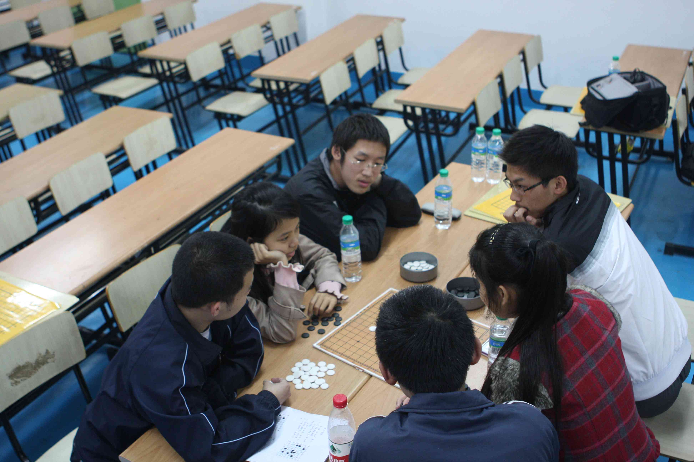
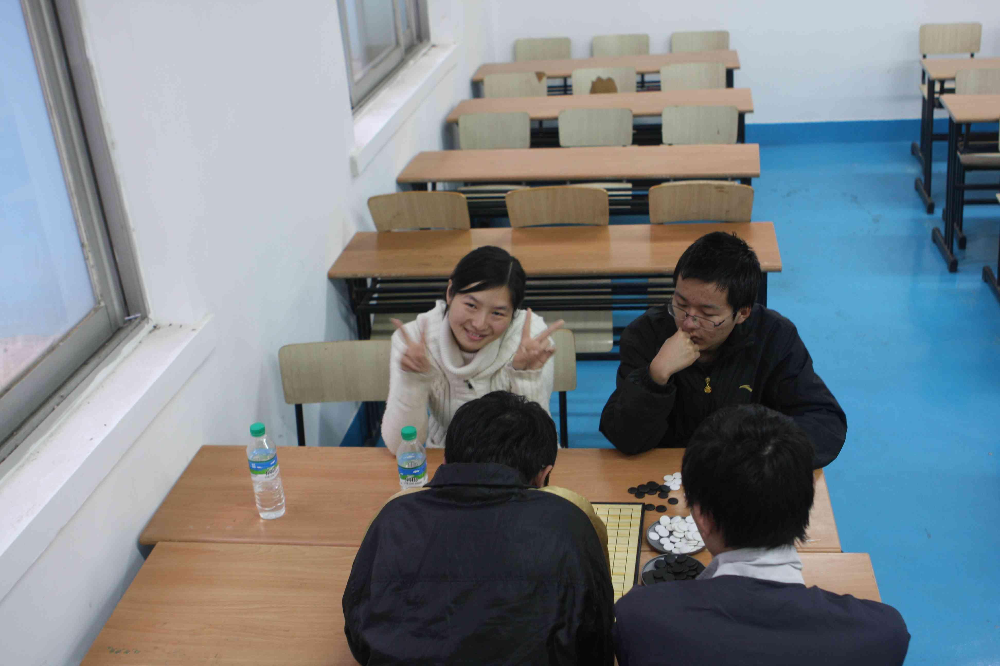

第一届武汉大学vs华中师范大学五子棋友谊赛
#11 Re:第一届武汉大学vs华中师范大学五子棋友谊赛 作者：风铃 发表时间：2010-11-19 10:31:03
表示羡慕，我们这~~哎，什么时候才能有次组织比赛的#12 Re:第一届武汉大学vs华中师范大学五子棋友谊赛 作者：湮落梓涵 发表时间：2010-11-19 12:18:17
谢谢大家支持和鼓励O(∩_∩)O~我们两个学校先是大家很熟，由于两个学校对门，经常到对方学校参加五子棋活动。双方校队关系特好，所以比赛很好谈，一拍即合，呵呵。#13 Re:Re:第一届武汉大学vs华中师范大学五子棋友谊赛 作者：梧桐风 发表时间：2010-11-19 12:29:53
引用：哪儿呀
原文由 风铃 发表于 2010-11-19 10:31:03 :
表示羡慕，我们这~~哎，什么时候才能有次组织比赛的
#14 武汉大学vs华中师范大学五子棋友谊赛补充规定 作者：湮落梓涵 发表时间：2010-11-25 23:12:24
武汉大学vs华中师范大学
五子棋友谊赛补充规定
一、时间：2010年11月27日8：30开始，每小时一轮；视总体进度，于12：00（±20分钟）进行午餐并稍事休息；下午从13：00（±20分钟）开始继续进行，直至比赛结束。
二、具体地点：武汉大学信息学部一号教学楼203室（活动桌椅）。
三、外援：目前已联系好湖北省五子棋队
四、替补：考虑到有些同学不能保证全天时间，同时出于扩大参与的目的，允许两校随时换上、换下任一同学；但任意换下者，不得再次换上，亦不得台次间互换。
五、欢迎其它兄弟学校的同学和广大棋友前来共同交流学习，在广埠屯电脑城下车，步行走到校门口，联系董行（189861476**，QQ：284591037）接站。
大赛筹备组
［此帖子已被 湮落梓涵 在 2010-11-25 23:27:22 编辑过］
#15 Re:第一届武汉大学vs华中师范大学五子棋友谊赛 作者：掌棋宣传员 发表时间：2010-11-25 23:54:00
掌棋盟预祝比赛圆满成功~#16 Re:第一届武汉大学vs华中师范大学五子棋友谊赛 作者：极地剑客 发表时间：2010-11-26 19:18:12
支持楼主MM~记得比赛完发几个MM照片啊#17 Re:第一届武汉大学vs华中师范大学五子棋友谊赛 作者：猪小姐 发表时间：2010-11-26 22:33:54
支持饼饼~#18 武汉大学vs华中师范大学五子棋友谊赛临时成绩表 作者：湮落梓涵 发表时间：2010-11-27 10:49:04
［此帖子已被 湮落梓涵 在 2010-11-27 10:56:12 编辑过］
#19 Re:第一届武汉大学vs华中师范大学五子棋友谊赛 作者：屏蔽 发表时间：2010-11-27 12:17:52
据说那俩孩子放你们鸽子了……#20 Re:第一届武汉大学vs华中师范大学五子棋友谊赛 作者：湮落梓涵 发表时间：2010-11-27 12:40:46
回屏蔽：高飞老师因病，遗憾缺席了#21 Re:Re:第一届武汉大学vs华中师范大学五子棋友谊赛 作者：迷糊娃娃 发表时间：2010-11-27 15:22:23
又不是我们想放的，真是的
#22 Re:第一届武汉大学vs华中师范大学五子棋友谊赛 作者：迷糊娃娃 发表时间：2010-11-27 15:24:07
姐姐不好意思哦！嘿嘿！下次去你们学校玩咯#23 武汉大学vs华中师范大学五子棋友谊赛最终成绩 作者：湮落梓涵 发表时间：2010-11-27 16:32:45
最终结果：场分双方3胜3负2和打平，局分华中师范大学65：63武汉大学，华中师范大学以一局棋的微弱优势取胜

［ 屏蔽 于 2010-11-27 17:01:21 时花20金币送鲜花一朵］
#24 Re:第一届武汉大学vs华中师范大学五子棋友谊赛 作者：湮落梓涵 发表时间：2010-11-27 22:52:05
2010年11月27日华中师范大学博雅棋社和武汉大学棋类协会，在武汉大学信息学部一号教学楼203室举行了“第一届武汉大学vs华中师范大学五子棋友谊赛”，两个学校各选出八名选手参加了此次比赛。
上午九点开始比赛，整个赛场既弥漫着比赛的紧张气氛，又充满着友谊和沉浸棋局思考的快乐。 经过八轮全队轮赛制激烈厮杀，最终场分打平，局分武汉大学以一盘棋之差而略低于华中师范大学。其中武汉大学的董行夺得了全场唯一一个全胜。遗憾的是，先前表示愿意前来捧场的湖北省五子棋队艾显平老师，因病缺席了本次活动，原打算是车轮战活动也因此取消，最后大家以联棋的方式结束了本次友谊赛的愉快之旅。
通过此次比赛，加深了两校之间的友谊，充分调动了同学们对棋类活动的兴趣，比赛促进了选手们的棋艺交流，并希望藉此推动五子棋运动在湖北高校乃至全国高校的开展。



［此帖子已被 湮落梓涵 在 2010-11-27 23:03:31 编辑过］
［此帖子已被 湮落梓涵 在 2010-11-27 23:05:10 编辑过］
#25 Re:Re:第一届武汉大学vs华中师范大学五子棋友谊赛 作者：湮落梓涵 发表时间：2010-11-27 23:07:06
非常期待莹莹来哈
#26 Re:第一届武汉大学vs华中师范大学五子棋友谊赛 作者：湮落梓涵 发表时间：2010-11-27 23:15:30
嘿嘿，看大家还认得出华师一只月饼不？
#27 Re:第一届武汉大学vs华中师范大学五子棋友谊赛 作者：湮落梓涵 发表时间：2010-11-27 23:16:59
话说我今天比赛还真悲剧，下得那个乱七八糟各种低级错误……
还好最后没把华师害输了。
#28 Re:第一届武汉大学vs华中师范大学五子棋友谊赛 作者：涩涩棋 发表时间：2010-11-29 18:36:20
希望下次我们天大跟南大也可以举办一次这样的活动